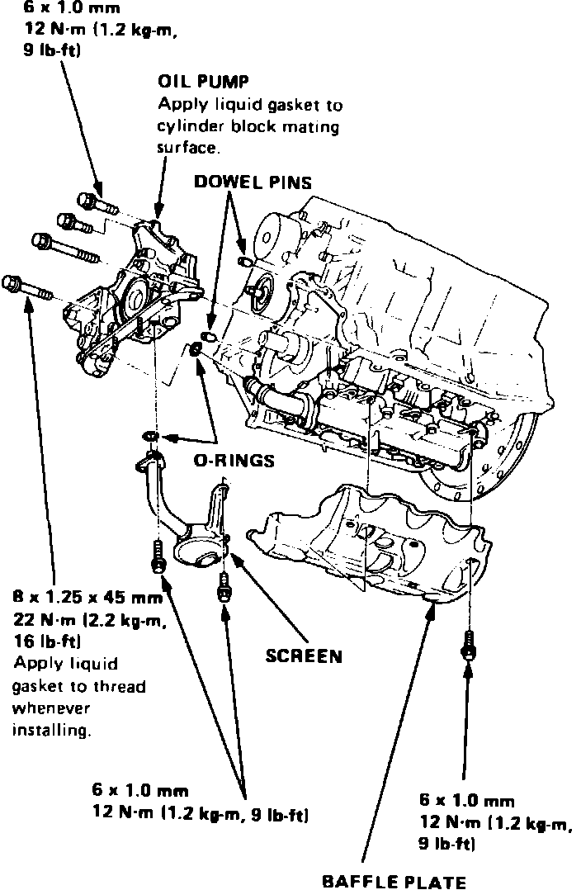
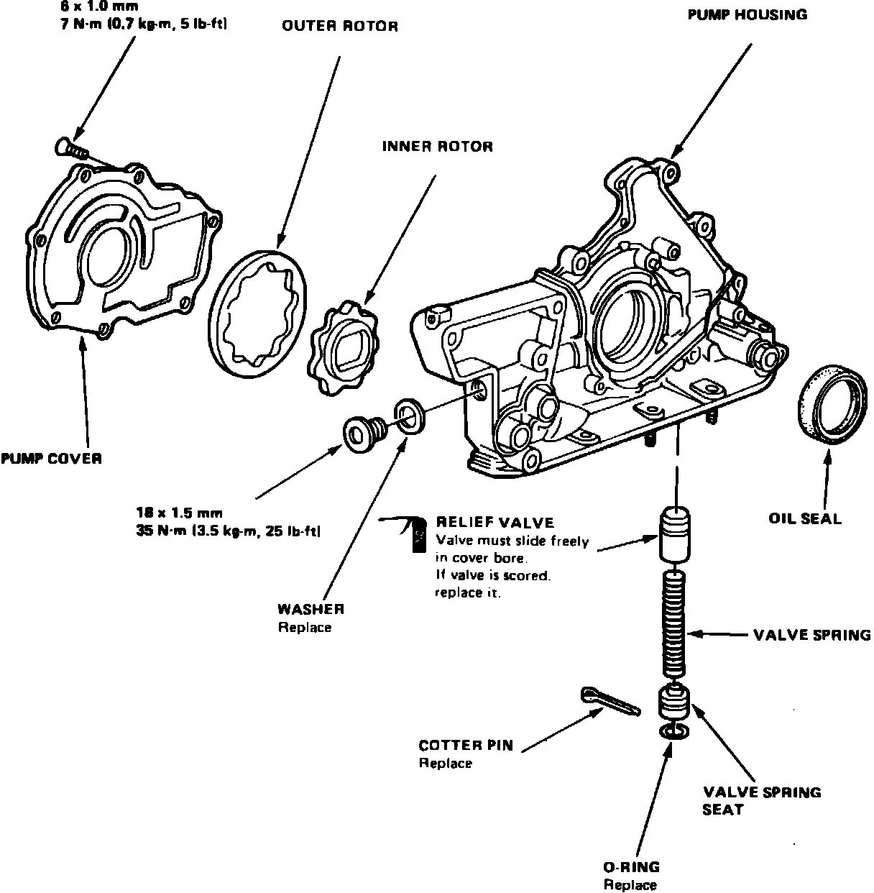
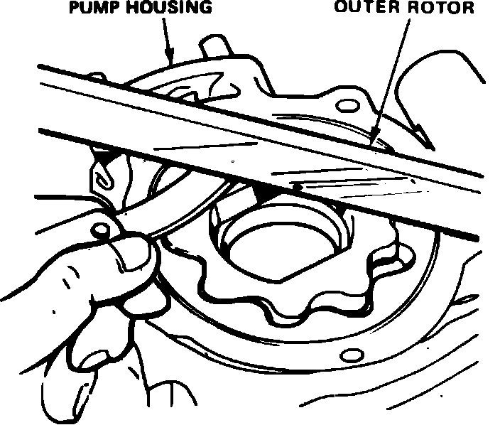
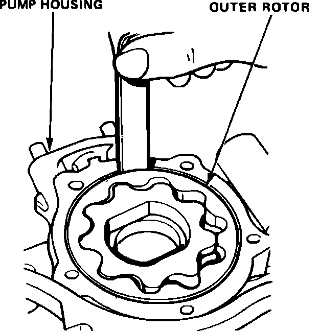

Oil Pump: Service and Repair
Fig. 40 Oil pump replacement. Legend:

Removal
1. Drain engine oil into a suitable container.
2. Rotate crankshaft until ``TDC'' mark on pulley aligns with index mark on cover.
3. Remove timing belt upper cover, then the alternator drive belt, power steering pump drive belt and A/C compressor drive belt.
4. Remove engine splash guard, then the crankshaft pulley and timing belt lower cover.
5. Release timing belt tensioner, then remove timing belt and driven pulley.
6. Remove oil filter, then the oil pan attaching bolts and oil pan.
7. Remove oil screen and baffle plate, then the oil pump attaching bolts and oil pump, Fig. 40.
Fig. 41 Exploded view of oil pump assembly. Legend:

Disassembly & Inspection
1. Remove pump housing attaching screws, then separate housing and cover, Fig. 41.
Fig. 37 Oil pump outer rotor radial clearance measurement:

2. Measure outer pump rotor radial clearance, Fig. 37. Clearance must not exceed .008 inch.
Fig. 38 Oil pump outer rotor axial clearance measurement:

3. Measure outer pump rotor axial clearance, Fig. 38. Clearance must not exceed .005 inch.
Fig. 39 Oil pump housing to rotor clearance measurement:

4. Measure radial clearance between housing and outer rotor, Fig. 39. Clearance must not exceed .008 inch.
5. Inspect both rotors and pump housing for wear or damage and replace as necessary.
6. Remove oil seal from pump, then drive in new seal using a suitable tool.
Assembly & Installation
1. Assemble oil pump in the reverse order of disassembly. Apply suitable locking compound to pump housing screws prior to installation.
2. Ensure oil pump rotates freely.
3. Apply clean engine oil to seal lip, then install dowel pins and new O-ring on cylinder block.
4. Ensure mating surfaces are clean and dry, then apply suitable sealant to cylinder block mating surface.
Fig. 40 Oil pump replacement. Legend:
5. Apply suitable sealant to inner threads of bolt holes and to bolt threads, then install oil pump. Torque attaching bolts to specifications, Fig. 40.
6. Install oil pipe and joint, baffle plate and oil screen, torquing all attaching bolts to specifications. Do not fill engine with oil until at least 30 minutes after assembly.